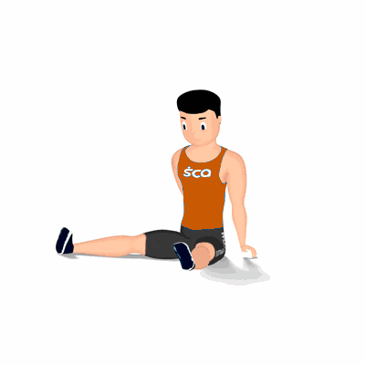

Lateral Aberta

Alongamento para os músculos da coxa, com enfoque na parte interna, adutor longo. Preparando-os para a atividade física.
Ficha Técnica
Tipo: Alongamento
Grupo Muscular: Perna
Aparelho: Nenhum
Músculos: Nenhum
Como realizar
- Na posição em pé, 2. Pé direito distante do pé esquerdo;
- Manter a perna esquerda estendida;
- Agache sobre a perna direita realizando a flexão do joelho;
- Manter nessa posição entre 20 a 30 segundos ou conforme orientado pelo professor;
- Repita o alongamento trocando a posição das pernas.
 RC STORE
RC STORE